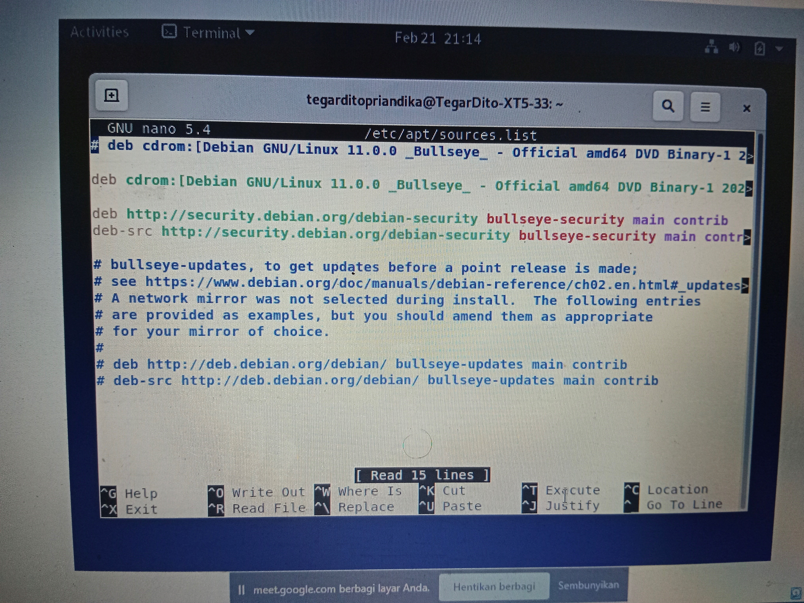
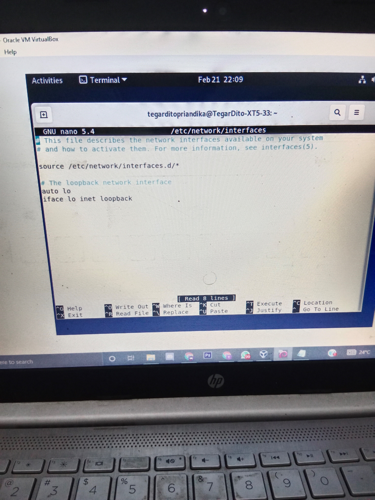

debian 11 Virtual LAN Trunking (VLAN Trunking)
Posted by Tegar Dito
Om Tegar- Virtual LAN (VLAN) merupakan sekelompok perangkat pada satu LAN atau lebih yang dikonfigurasikan (menggunakan perangkat lunak pengelolaan) sehingga dapat berkomunikasi seperti halnya bila perangkat tersebut terhubung ke jalur yang sama, padahal sebenarnya perangkat tersebut berada pada sejumlah segmen LAN yang berbeda. Vlan dibuat dengan menggunakan jaringan pihak ketiga. VLAN merupakan sebuah bagian kecil jaringan IP yang terpisah secara logika.
debian 11 Virtual LAN Trunking (VLAN Trunking)
Posted by Tegar Dito
Om Tegar- Linux Debian 11 Terminal
Jika Kemarin Kita Sudah Mempersiapkan Debian Kita untuk Proses Selanjutnya kita akan lanjut setup IP Debian Tersebut Terlebih Dahulu, Bagi Teman Teman yang Belum Membaca Blog Kita Sebelumnya Linux Debian 11 'Bullseye'
Untuk langkah Pertama Kita akan Mengecek Koneksi Debian itu sendiri dengan cara "ping google.com". sebelum melakukan ping pastikan anda sudah masuk ke root Terminal.

ping google.com berfungsi untuk mengecek ping layanan internet pada debian kita. Dan Untuk Memberhintakan ping Silahkan Klik Secara Bersamaan CTRL + C
Code
ping google.com
CTRL + C
Mengupdate Software/Perangkat Lunak
Setelah Kita Cek Koneksi Kita , Kita Akan ketikan “apt-get update” untuk mengupdate perangkat lunak

Code
apt-get update
repostory
Selanjutnya Adalah repository Dengan Cara ketikan perintah “nano /etc/apt/sources.list” lalu setelah muncul seperti gambar di atas , gunakan arrow pada keyboard untuk mengubah posisi mengetik pada bagian 2 baris di bawah # deb-src http://deb.debian.org/debian bullseye-update main contrib lalu ketikan
Code
nano /etc/apt/sources.list

Code
deb http://kartolo.sby.datautama.net.id/debian/ bullseye main contrib non-free
deb http://kartolo.sby.datautama.net.id/debian/ bullseye updates main contrib non free
deb http://kartolo.sby.datautama.net.id/debian-security/ bullseye/updates main contrib non-free
Lalu Klick Ctrl + X lalu Y dan enter dan setelah melakukan perubahan tersebut silahkan lakukan Add CD rom.

apt-get update
apt-get upgrade
setting port 22
ketikan nano/etc/apt/ssh_config untuk perintah host jalan maka yang awalnya #port 22 pada bagian “#” di hapus

Code
nano/etc/apt/ssh_config
# port 22 --> port 22
Untuk save perubahan Kita ctrl + x lalu Y dan enter,selanjutnya Kita Akan Reset Ulang ssh

systemctl Restart ssh
untuk Mengecek ssh Kita akan cetus ssh

kita bisa cek status dengansystemctl status ssh lalu untuk keluar
kita menggunakan ctrl + c
iP Debian
pengecekan an ip bisa di lakukan dengan perintah “ip a” / “ip -c a”. sebagai contoh saya akan menggunakan ip a

Code
Note: pada 2: epn0s3 (10.0.2.15/24) adalah ip kita.
ip a
Configurasi Ip
Kita akan Mulai Konfigurasi Ip Debian Kita , hal ini dapat di lakukan dengan mengetikkan kode nano /etc/network/interfaces untuk mengisi internet interface
Code
nano /etc/network/interfaces
Setelah Kita masuk ke Network interfaces kita ketikkan seperti berikut:
auto enp0s3
iface enp0s3 inet static
address 192.168.1.111
subnetmask 255.255.255.0
gateway 192.168.1.1
#dns nameserver 8.8.8.8
pada bagian ip address bedakan dengan ip virtual box dan dekstop kita (buka command promt). hal ini untuk mengatur perintah internet interface sebelum digunakan agar addres tidak bertabrakan

selanjutnya kita ubah pada attached to “NAT” menjadi attached to “host-only adapter” untuk menyambungkan ke internet pada device kita . dan terakhir kita akan cek ip yang sudah kita rubah

kita restart networking nya terlebih dahulu, bebas kalian bisa menggunakan "systemctl restart networking" atau "/etc/init.d/networking restart"
systemctl restart networking
/etc/init.d/networking restart
lalu kita cek ip kitaip a
Terimakasih untuk yang sudah mengikuti blog ini sampai akhir. untuk kelanjutanya adalah Remote Server di debian atau kalian bisa click Remote server silahkan tinggalkan komentar anda di contact jika mengalami kesulitan.